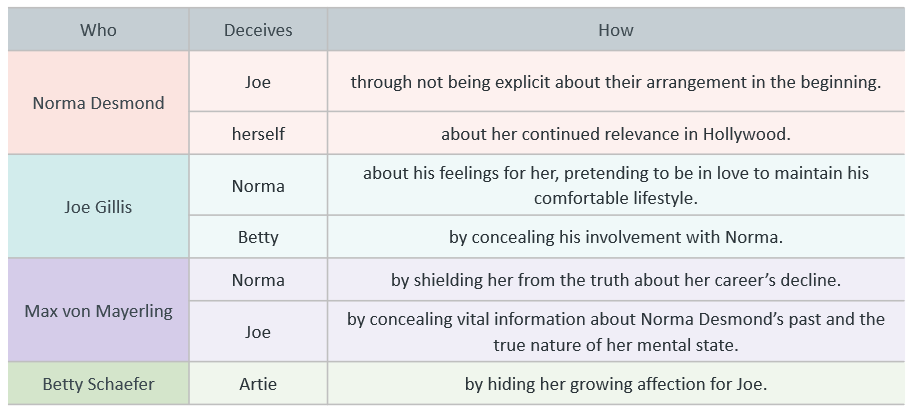

On this page
- Key Quotes
- Key Ideas
- Joe Gillis and Betty Schaefer
- Key Quotes
- Key Ideas
- Norma Desmond and Max Von Mayerling
- Key Quotes
- Key Ideas
- Norma Desmond and Cecil B. deMille
- Key Quotes
- Key Ideas
- Joe Gillis and Max Von Mayerling
- Key Quotes
- Key Ideas
- Joe Gillis and Artie Green
- Key Quotes
- Key Ideas
- Betty Schaefer and Artie Green
- Key Quotes
- Key Ideas
- Joe Gillis and Sheldrake
- Key Quotes
- Key Ideas
- Norma Desmond and Betty Schaefer
- Key Quotes (Implied Tension)
- Key Ideas
- Norma Desmond and Cecil B. deMille
- Key Quotes
- Key Ideas
- Max Von Mayerling and Betty Schaefer
- Key Quotes (Implied Contrast)
- Key Ideas
- Sheldrake and Betty Schaefer
- Key Quotes
- Key Ideas
- Key Quotes
- Key Ideas
- Betty Schaefer and Norma Desmond
- Key Quotes
- Key Ideas
- Relationship with Ambition
- Norma Desmond
- Joe Gillis
- Betty Schaefer
- Max von Mayerling
- Relationship with Delusion
- Joe’s agent, Morino
- Betty Schaefer
- Norma Desmond
- Joe Gillis
- Max von Mayerling
- Relationship with Greed
Character Relationships
Joe Gillis and Norma Desmond
Joe and Norma’s relationship is built on dependence, illusion, and emotional imbalance. Norma clings to Joe as a last connection to youth and relevance, while Joe allows himself to be financially supported, though emotionally trapped. Their dynamic is parasitic and destructive, culminating in Joe’s death and Norma’s complete psychological collapse.
Key Quotes
Joe: ’Norma, you’d be throwing it away. I don’t qualify for the job, not any more.’
Norma: ’Is it funny that I’m in love with you?’
Joe: ’Wake up, Norma. You’d be killing yourself to an empty house. The audience left twenty years ago.’
Norma: ’You’re not leaving me!’
Key Ideas
Dependency
Reality vs. Illusion
Power imbalance
Gender roles
Joe Gillis and Betty Schaefer
Joe and Betty’s relationship symbolises hope, creativity, and authentic emotional connection. While Joe is initially cynical, Betty helps him reconnect with his talent and ideals. However, Joe’s entrapment in Norma’s world ultimately sabotages their bond.
Key Quotes
Betty: ’If you love me, Joe.’
Joe: ’Three cheers for Betty Schaefer! I will now kiss that nose of yours.’
Betty: ’Joe, I can’t look at you any more.’
Joe: ’Good luck to you, Betty... When you and Artie get back... here’s the pool.’
Key Ideas
Authenticity
Missed opportunities
Love vs. obligation
Hope and disappointment
Norma Desmond and Max Von Mayerling
Max and Norma share a hauntingly devoted and co-dependent relationship. Once her director and husband, Max now lives as her butler, fuelling her illusions to protect her fragile psyche. His loyalty borders on tragic obsession.
Key Quotes
Max: ’I made her a star. I cannot let her be destroyed.’
Max: ’It was I who asked to come back... I was her first husband.’
Max: ’The cameras have arrived, Madame.’
Norma: ’All right, Mr. deMille, I’m ready for my close-up.’
Key Ideas
Loyalty
Delusion
Power reversal
Sacrifice
Norma Desmond and Cecil B. deMille
Norma views deMille as the key to her return to fame, though he treats her with nostalgia and pity. Their relationship highlights the **Hollywood power shift** from silent films to sound, and the industry’s neglect of ageing stars.
Key Quotes
Norma: ’Now Mr. deMille can wait till I’m good and ready.’
deMille: ’Thirty million fans have given her the brush. Isn’t that enough?’
Norma: ’We’ll be working again, won’t we, Chief?’
deMille: ’Tell him to forget about our car. I’ll buy him five old cars if necessary.’
Key Ideas
Fame and decay
Nostalgia vs. reality
Hollywood’s cruelty
Gendered ageism
Joe Gillis and Max Von Mayerling
Though they barely trust one another, Joe and Max are both caught in Norma’s gravitational pull. Max warns Joe of Norma’s delusions but ultimately enables them, silently observing Joe’s downfall.
Key Quotes
Max: ’You must understand, I discovered her when she was eighteen.’
Max: ’Madame is the greatest star of them all... I will take Mr. Gillis’ bags.’
Joe: ’Oh, that. It’s from a friend of mine. A middle-aged lady, very foolish and very generous.’
Key Ideas
Powerlessness
Enabling behaviour
Masculinity
Pity and rivalry
Joe Gillis and Artie Green
Joe and Artie are casual friends, connected through Betty. Artie is warm, generous, and unsuspecting—offering Joe a place to stay and unknowingly introducing him to Betty, who will fall in love with Joe. Their relationship represents Hollywood’s working-class camaraderie, but it is ultimately undermined by Joe’s betrayal.
Key Quotes
Artie: ’Hey Joe, I said you could have my couch, I didn’t say you could have my girl.’
Artie: ’Where you been keeping that gorgeous face of yours?’
Artie: ’Well what do you know, Joe Gillis.’
Key Ideas
Friendship
Jealousy and betrayal
Trust
Betty Schaefer and Artie Green
Betty and Artie are engaged, but her growing admiration for Joe shifts the dynamic. Artie symbolises comfort and stability, while Joe represents ambition and excitement. Their relationship quietly dissolves as Betty’s emotional attention shifts.
Key Quotes
Artie: ’Wait a minute, this is the woman I love, who was loaded.’
Betty: ’Of course I love him. I always will. I’m just not in love with him any more.’
Key Ideas
Love vs. stability
Unspoken heartbreak
Emotional conflict
Joe Gillis and Sheldrake
Sheldrake represents the industry gatekeepers—pragmatic and dismissive. Joe’s interactions with him underscore how impersonal and transactional Hollywood has become. Their relationship exposes the disillusionment of struggling writers.
Key Quotes
Sheldrake: ’Alright Gillis, you’ve got five minutes, what’s your story about?’
Joe: ’You’d have turned down Gone With the Wind.’
Sheldrake: ’Put in a few numbers, that’d make a cute musical.’
Key Ideas
Hollywood as business
Artistic compromise
Creative frustration
Norma Desmond and Betty Schaefer
Although they never interact directly, Norma and Betty represent **opposing ideals of womanhood**. Betty is young, modern, and practical; Norma is older, delusional, and clinging to a past era. Their symbolic rivalry culminates in Norma’s jealousy-fuelled murder of Joe.
Key Quotes (Implied Tension)
Norma (to Joe): ’Is it a woman? I know it’s a woman...’
Joe: ’All right, baby. This way out.’
Betty: ’If you love me, Joe.’
Key Ideas
Rivalry
Gendered insecurity
Age and beauty
Norma Desmond and Cecil B. deMille
Norma idolises deMille as her old mentor, believing he will revive her career. deMille pities Norma, indulges her briefly, but ultimately distances himself. Their relationship exemplifies Hollywood’s betrayal of its past stars.
Key Quotes
Norma: ’Now Mr. deMille can wait till I’m good and ready.’
deMille: ’Thirty million fans have given her the brush. Isn’t that enough?’
Norma: ’We’ll be working again, won’t we, Chief?’
deMille: ’A dozen press agents working overtime can do terrible things to the human spirit.’
Key Ideas
Nostalgia
Fame and decline
Compassion vs. cruelty
Max Von Mayerling and Betty Schaefer
Though they never meet, Max and Betty represent two opposite relationships with Joe: one built on silent loyalty and loss of self (Max), the other on mutual respect and potential for growth (Betty). Max is the ghost of what Joe could become if he fully submits to Norma.
Key Quotes (Implied Contrast)
Max: ’I directed all her early pictures. I made her a star.’
Betty: ’I want to write. I don’t want to be a reader all my life.’
Key Ideas
Self-sacrifice vs. ambition
Emotional entrapment vs. liberation
Generational contrast
Sheldrake and Betty Schaefer
Betty and Sheldrake represent opposite ends of the studio power structure. Sheldrake controls opportunities and trivialises creative work, while Betty strives to have a voice as a writer. Their professional relationship reflects the dismissiveness of studio executives toward aspiring creatives.
Key Quotes
Sheldrake: ’Make it a girls’ softball team... it’d make a cute musical.’
Betty: ’I kind of hoped to get in on this deal. I don’t want to be a reader all my life.’
Key Ideas
Industry hierarchy
Gender and creative voice
Power and dismissiveness
subsectionJoe Gillis and Cecil B. deMille Joe’s view of deMille is shaped by disillusionment; deMille represents the **industry’s indifference** toward people like Norma and himself. Their interaction is limited, but deMille’s treatment of Norma is indirectly relayed to Joe—highlighting Hollywood’s tendency to sentimentalise the past while refusing to truly engage with it.
Key Quotes
deMille: ’Thirty million fans have given her the brush. Isn’t that enough?’
Joe (on deMille): ’He didn’t have the heart to tell you. None of us has had the heart.’
Key Ideas
Fame and abandonment
Disillusionment with power
Truth vs. kindness
Betty Schaefer and Norma Desmond
Though Betty and Norma never speak directly, their relationship exists as a powerful symbolic contrast—two women representing vastly different eras, values, and roles in Hollywood. Betty is young, ambitious, and grounded in reality; Norma is ageing, delusional, and obsessed with regaining lost fame. They become rivals not only for Joe’s affection but also as emblematic opposites: one looking forward, the other trapped in the past. Norma’s jealousy toward Betty culminates in Joe’s death—making their indirect relationship one of the most consequential in the film.
Key Quotes
Betty: ’It’s not your career — it’s mine. I kind of hoped to get in on this deal. I don’t want to be a reader all my life. I want to write.’
Norma: ’Is it a woman? I know it’s a woman...’
Norma: ’You’re not leaving me!’
Joe (to Betty): ’Good luck to you, Betty... here’s the pool.’
Key Ideas
Generational conflict
Female ambition vs. faded fame
Jealousy and romantic rivalry
Hope vs. delusion
Relationship with Ambition
Ambition is a desire and determination to achieve success. It is a motivational force that compels individuals to set and pursue goals, often with a willingness to work hard, overcome obstacles, and make sacrifices to attain those goals.
Norma Desmond
Norma’s ambition is rooted in her desire to regain her past Hollywood stardom and in her fear of becoming irrelevant.
It is also sustained by her delusional belief in her continued desirability as an actress, despite Hollywood moving on.
Norma’s isolation and the presence of enablers who validate her fantasies further fuel her ambition and detachment from reality.
In response to the word comeback: ‘I hate that word. It’s a return, a return to the millions of people who have never forgiven me for deserting the screen.’
Joe Gillis
Joe’s ambition arises from financial desperation and a desire for Hollywood success.
His pursuit of financial security and career advancement drives him into a complex relationship with Norma.
‘The poor dope - he always wanted a pool. Well, in the end, he got himself a pool.’
Betty Schaefer
Betty is driven by her genuine passion for screenwriting and a strong desire to succeed in the film industry.
‘What’s wrong with being on the other side of the cameras? It’s really more fun.’
Max von Mayerling
Max’s ambition is solely devoted to serving and preserving Norma Desmond’s illusion of fame.
He is driven by his unwavering dedication to Norma, having been her director and husband during her stardom.
‘Madame is the greatest star of them all.’
Relationship with Delusion
Joe’s agent, Morino
Wilder characterises Joe’s agent Morino as a representative of the cutthroat nature of Hollywood. Morino says he could give Gillis money… but he won’t. Instead, Gillis should use his desperate state as inspiration – it’ll force him to write because he’ll need to do it.
Betty Schaefer
Betty is portrayed as a down-to-earth, sincere, and practical character. She represents a departure from the delusional world of Hollywood, focusing on her genuine passion for screenwriting and her desire for authentic, meaningful connections.
Norma Desmond
‘All right, Mr. DeMille, I’m ready for my close-up.’
In the film’s iconic closing line, Norma’s delusional state of mind reaches its peak, marking her descent into madness. While she retained some connection to reality in earlier scenes, this quote signifies the complete erasure of any remaining self-awareness. Norma regresses to her past glory, even mistaking Max for director Cecil DeMille, vividly highlighting the profound transformation of her fantasy world.
Joe Gillis
‘You don’t yell at a sleepwalker – he may fall and break his neck. That’s it: She was still sleepwalking along the giddy heights of a lost career.’
Joe compares Norma to a sleepwalker, suggesting she is unaware of her actions and the reality of her situation, emphasising the delicate balance between preserving her illusions and confronting the truth of her faded career.
Max von Mayerling
‘That is my job. It has been for a long time. You must understand I discovered her when she was eighteen. I made her a star. I cannot let her be destroyed.’
By nourishing her illusions and crafting fan mail, Max sees himself as Norma’s guardian, dedicated to preserving her faded fame. Yet, as he fervently conceals the truth to protect her from despair, his deceptions inadvertently propel her further into madness.
Relationship with Greed
